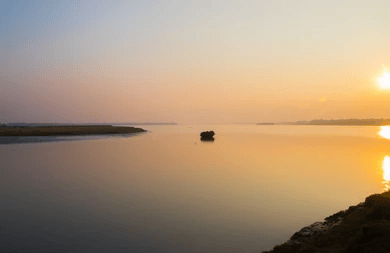

is a river in the Jhalokati and Barguna districts of southwestern Bangladesh . The river is 105 kilometres (62 mi) long, has an average width of 760 metres (2,600 ft) and is meandering in nature. The identification number given to the Bishkhali River by the Bangladesh Water Development Board (PWB) is Southwestern River No. 60.
The Bishkhali River:
Flow
The Bishkhali River originates from the Sugandha River flowing in the Gabkhan Dhansiri Union area of Jhalokati Sadar Upazila of Jhalokati District. Then, the watercourse of this river passes through Rajapur , Kanthalia and Betagi Upazilas and flows to Patharghata Union of Patharghata Upazila of Barguna District before emptying into the Bay of Bengal . The downstream side of the river is wider than the upstream side. The river has a flow of water throughout the year and small and large boats ply. However, during the rainy season, the flow of water in the river increases to a higher level than normal. At this time, the area along the riverbanks is flooded with flood water. The river is affected by the influence of the tides.
Description
The Bishkhali River is a very fast-flowing river. After reaching Jhalakathi district, the river takes a large bend and flows through the middle of Barguna district before flowing into the Bay of Bengal. The average width of the first 30 km of its course is 1 km. The average width of the next 66 km of this river is about 2 km. Its average depth is 16 meters. The water of the Madhumati and Kacha rivers flows into the Bishkhali River through the Kaukhali and Gabkhan Canals. Tidal currents are active in this river. Being very close to the sea coast, salinity is found in the water of this river. The two tributaries of the Bishkhali are Khagdon Canal and Badankhali Canal.
